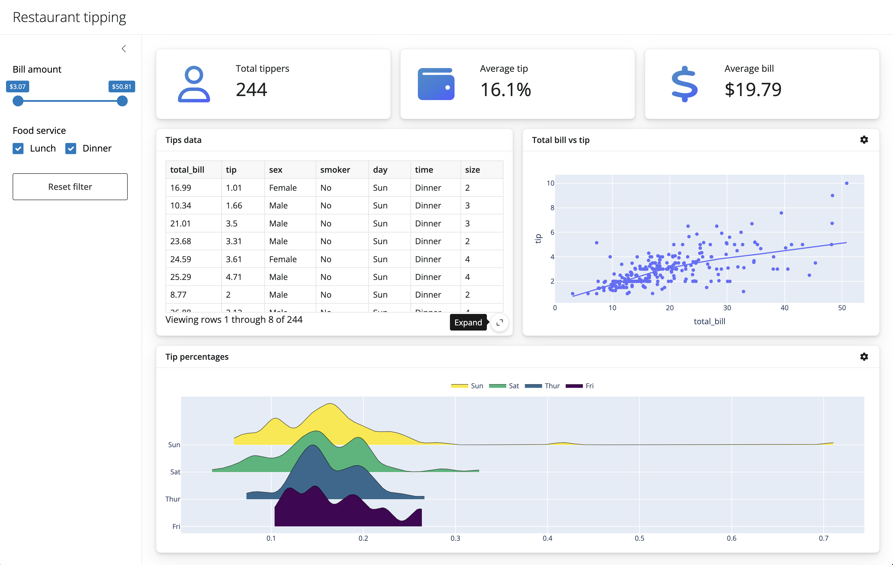

User interfaces
With Shiny, you can create a wide variety of user interfaces (UI), including dashboards. Here, we’ll use the following dashboard as motivation to learn about some important UI components (e.g., cards, value boxes) and layouts (e.g., columns).

See the gallery, layouts, and components for more UI design inspiration.
Basic dashboard
Before we walk through a more sophisticated dashboard, consider this basic dashboard with a header (i.e., page title) and a sidebar layout. In the sidebar, there are a couple inputs for getting different views of the data, and in the main content area, is a plotly output. That output is also placed in a card to give it some depth and the ability to go full screen. The card isn’t critical when there is only one output, but they come highly recommended when there are multiple outputs to display.
#| '!! shinylive warning !!': |
#| shinylive does not work in self-contained HTML documents.
#| Please set `embed-resources: false` in your metadata.
#| standalone: true
#| components: [viewer, editor]
#| layout: vertical
#| viewerHeight: 500
from shiny.express import input, render, ui
from shinywidgets import render_plotly
ui.page_opts(title="Penguins dashboard", fillable=True)
with ui.sidebar():
ui.input_selectize(
"var", "Select variable",
["bill_length_mm", "bill_depth_mm", "flipper_length_mm", "body_mass_g", "year"]
)
ui.input_numeric("bins", "Number of bins", 30)
with ui.card(full_screen=True):
@render_plotly
def hist():
import plotly.express as px
from palmerpenguins import load_penguins
return px.histogram(load_penguins(), x=input.var(), nbins=input.bins())Sophisticated dashboard
Now let’s work up to a more sophisticated dashboard by walking through components and layouts that are useful for dashboards step-by-step.
Cards
Cards are great for visually grouping together related content, and it’s best practice to place related components together in a card. Here you’ll also have an opportunity to add a header, footer, add full_screen capability, and more. As we’ll see later, cards are also useful for making outputs stand out from one another when there are multiple outputs to display.
#| '!! shinylive warning !!': |
#| shinylive does not work in self-contained HTML documents.
#| Please set `embed-resources: false` in your metadata.
#| standalone: true
#| components: [editor, viewer]
#| layout: vertical
#| viewerHeight: 300
from shiny.express import render, ui
with ui.card(full_screen=True):
ui.card_header("A card with a header")
@render.plot
def plot():
import matplotlib.pyplot as plt
return plt.scatter([1, 2, 3], [4, 5, 6])
with ui.card():
ui.markdown("Another card with some _markdown_.")Value boxes
Value boxes are great for highlighting important summaries. They require at least two values (the title and value) and also support a showcase argument for adding a visual representation of the value. The showcase argument can technically be any UI element, but is often a faicons (i.e., fontawesome) icon.
#| '!! shinylive warning !!': |
#| shinylive does not work in self-contained HTML documents.
#| Please set `embed-resources: false` in your metadata.
#| standalone: true
#| components: [editor, viewer]
#| layout: vertical
#| viewerHeight: 300
from shiny.express import render, ui
from faicons import icon_svg as icon
with ui.value_box(showcase=icon("piggy-bank")):
"Total sales"
"$1,000,000"
with ui.value_box(showcase=icon("person")):
"Total customers"
@render.ui
def customers():
return f"{1000:,}"Under the hood, value boxes are built on cards, so you can leverage similar options like full_screen.
Multi-column layout
Create a multi-column layout based on a 12-column grid system by using ui.layout_columns(). By default, an intelligent equal-width layout is created, but each column width can be specified (in units of 1/12) using col_widths:
#| '!! shinylive warning !!': |
#| shinylive does not work in self-contained HTML documents.
#| Please set `embed-resources: false` in your metadata.
#| standalone: true
#| components: [editor, viewer]
#| layout: vertical
#| viewerHeight: 200
from shiny.express import ui
with ui.layout_columns(col_widths=[6, 6, 12]):
with ui.card():
"Card 1"
with ui.card():
"Card 2"
with ui.card():
"Card 3"By default, col_widths doesn’t apply on smaller width (i.e., mobile) screens (in that case, columns go full-width). However, col_widths also accepts a dictionary of column widths for different screen sizes (e.g., col_widths=dict(sm=6, md=4) yields 2 columns on small screens and 3 columns on medium (or larger) screens).
Filling layout
Set ui.page_opts(fillable=True) to encourage content to fill the screen. Many of Shiny’s layouts and components automatically fill the screen when this option is set, which is often desirable for dashboards, but may not be what you want for things like value boxes or cards with a textual description. You can override the filling behavior on a per-component basis by setting fill=False or by specifying a height:
#| '!! shinylive warning !!': |
#| shinylive does not work in self-contained HTML documents.
#| Please set `embed-resources: false` in your metadata.
#| standalone: true
#| components: [editor, viewer]
#| layout: vertical
#| viewerHeight: 300
from shiny.express import ui
ui.page_opts(fillable = True)
with ui.layout_column_wrap(fill=False):
with ui.value_box():
"Value box"
"$1,000,000"
with ui.value_box():
"Value box"
"$1,000,000"
with ui.card():
"Card that fills remaining space..."Did you know the app viewer above is resizable? Try resizing it to see how the layout responds (the card fills the remaining space).
Tooltips and popovers
Tooltips and popovers are a useful means for both displaying and interacting with additional information in a non-obtrusive way. Tooltips are shown on hover, whereas popovers are shown on click, making them more suitable for interactive content like inputs. In the actual dashboard, we’ll leverage a popover to effectively add a toolbar with additional inputs controls to card headers.
#| '!! shinylive warning !!': |
#| shinylive does not work in self-contained HTML documents.
#| Please set `embed-resources: false` in your metadata.
#| standalone: true
#| components: [editor, viewer]
#| layout: vertical
#| viewerHeight: 100
from shiny.express import ui
from faicons import icon_svg as icon
"Hover this icon: "
with ui.tooltip():
icon("circle-info")
"Tooltip message"
ui.br()
"Click this icon: "
with ui.popover(title="Popover title"):
icon("circle-info")
"Popover message"All together now
Let’s put it all together to create a dashboard for exploring restaurant tipping data.
Here we use a sidebar to hold our “global” inputs, and place outputs in cards. These cards are laid out column-wise, and value boxes highlight the most important numbers. Finally, inputs that are specific to each are placed in a popover so that they are unobtrusive and don’t distract the user from the main application content.
#| '!! shinylive warning !!': |
#| shinylive does not work in self-contained HTML documents.
#| Please set `embed-resources: false` in your metadata.
#| standalone: true
#| components: [editor, viewer]
#| layout: vertical
#| viewerHeight: 800
import faicons as fa
import plotly.express as px
from shinywidgets import render_plotly
from shiny import reactive, render, req
from shiny.express import input, ui
# Load data and compute static values
tips = px.data.tips()
bill_rng = (min(tips.total_bill), max(tips.total_bill))
# Add page title and sidebar
ui.page_opts(title="Restaurant tipping", fillable=True)
with ui.sidebar(open="desktop"):
ui.input_slider("total_bill", "Bill amount", min=bill_rng[0], max=bill_rng[1], value=bill_rng, pre="$")
ui.input_checkbox_group("time", "Food service", ["Lunch", "Dinner"], selected=["Lunch", "Dinner"], inline=True)
ui.input_action_button("reset", "Reset filter")
# Add main content
ICONS = {
"user": fa.icon_svg("user", "regular"),
"wallet": fa.icon_svg("wallet"),
"currency-dollar": fa.icon_svg("dollar-sign"),
"gear": fa.icon_svg("gear")
}
with ui.layout_columns(fill=False):
with ui.value_box(showcase=ICONS["user"]):
"Total tippers"
@render.express
def total_tippers():
tips_data().shape[0]
with ui.value_box(showcase=ICONS["wallet"]):
"Average tip"
@render.express
def average_tip():
d = tips_data()
if d.shape[0] > 0:
perc = d.tip / d.total_bill
f"{perc.mean():.1%}"
with ui.value_box(showcase=ICONS["currency-dollar"]):
"Average bill"
@render.express
def average_bill():
d = tips_data()
if d.shape[0] > 0:
bill = d.total_bill.mean()
f"${bill:.2f}"
with ui.layout_columns(col_widths=[6, 6, 12]):
with ui.card(full_screen=True):
ui.card_header("Tips data")
@render.data_frame
def table():
return render.DataGrid(tips_data())
with ui.card(full_screen=True):
with ui.card_header(class_="d-flex justify-content-between align-items-center"):
"Total bill vs tip"
with ui.popover(title="Add a color variable", placement="top"):
ICONS["gear"]
ui.input_radio_buttons(
"scatter_color", None,
["none", "sex", "smoker", "day", "time"],
inline=True
)
@render_plotly
def scatterplot():
color = input.scatter_color()
return px.scatter(
tips_data(),
x="total_bill",
y="tip",
color=None if color == "none" else color,
trendline="lowess"
)
with ui.card(full_screen=True):
with ui.card_header(class_="d-flex justify-content-between align-items-center"):
"Tip percentages"
with ui.popover(title="Add a color variable"):
ICONS["gear"]
ui.input_radio_buttons(
"tip_perc_y", "Split by:",
["sex", "smoker", "day", "time"],
selected="day",
inline=True
)
@render_plotly
def tip_perc():
from ridgeplot import ridgeplot
# Must make a copy of this pandas dataframe before we mutate it!
# See https://shiny.posit.co/py/docs/reactive-mutable.html
dat = tips_data().copy()
dat["percent"] = dat.tip / dat.total_bill
yvar = input.tip_perc_y()
uvals = dat[yvar].unique()
samples = [
[ dat.percent[dat[yvar] == val] ]
for val in uvals
]
plt = ridgeplot(
samples=samples, labels=uvals, bandwidth=0.01,
colorscale="viridis", colormode="row-index"
)
plt.update_layout(
legend=dict(orientation="h", yanchor="bottom", y=1.02, xanchor="center", x=0.5)
)
return plt
# --------------------------------------------------------
# Reactive calculations and effects
# --------------------------------------------------------
@reactive.calc
def tips_data():
bill = input.total_bill()
idx1 = tips.total_bill.between(bill[0], bill[1])
idx2 = tips.time.isin(input.time())
return tips[idx1 & idx2]
@reactive.effect
@reactive.event(input.reset)
def _():
ui.update_slider("total_bill", value=bill_rng)
ui.update_checkbox_group("time", selected=["Lunch", "Dinner"])
## file: requirements.txt
ridgeplot==0.1.25Next steps
If you’d like to start developing Shiny apps locally, see the get started section on creating and running apps.
Otherwise, to keep learning more about some of the topics covered here, see the following:
- User interfaces: Learn more about the Shiny’s UI tooling.
- Reactivity: Learn how to manage code execution in response to user input.
- Jupyter Widgets: Learn how all about Shiny’s Jupyter Widgets integration.